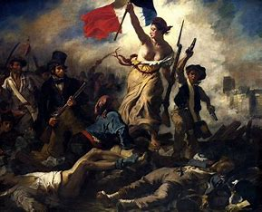

Historia Dominicana
Historia Colonial

La historia es la ciencia que estudia los acontecimientos pasados de la humanidad, basándose en documentos, registros o testimonios confiables. Su objetivo es comprender los procesos sociales de cambio en el tiempo y reconstruir el pasado mediante una narración que da sentido a los sucesos. La historia se puede dividir en diferentes ramas según el tema, el periodo o la región que se analiza. La historia como materia en las instituciones de enseñanza tiene su origen en los siglos XVIII y XIX y busca formar a los estudiantes en el conocimiento crítico de su pasado y su presente.